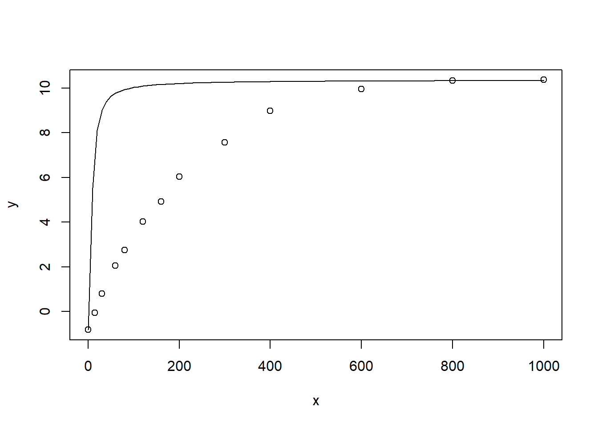
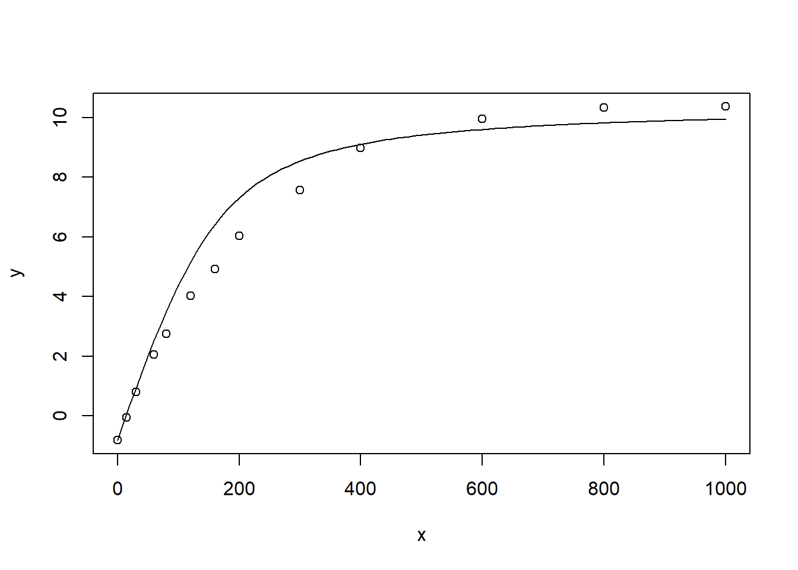
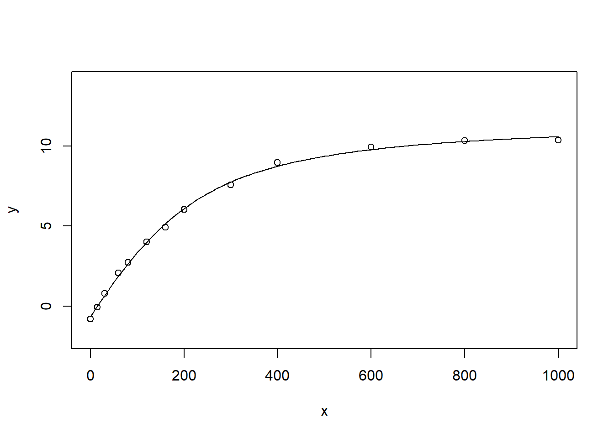
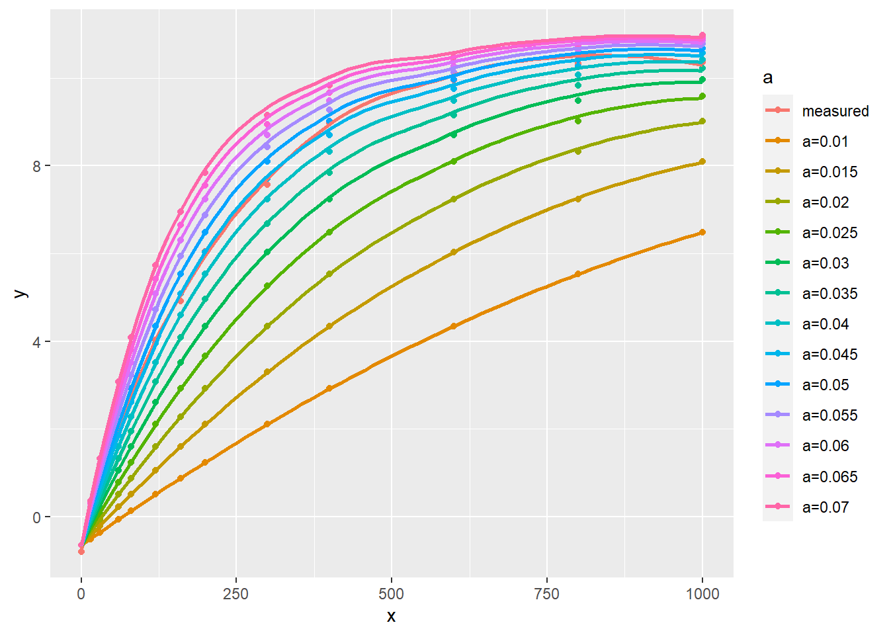
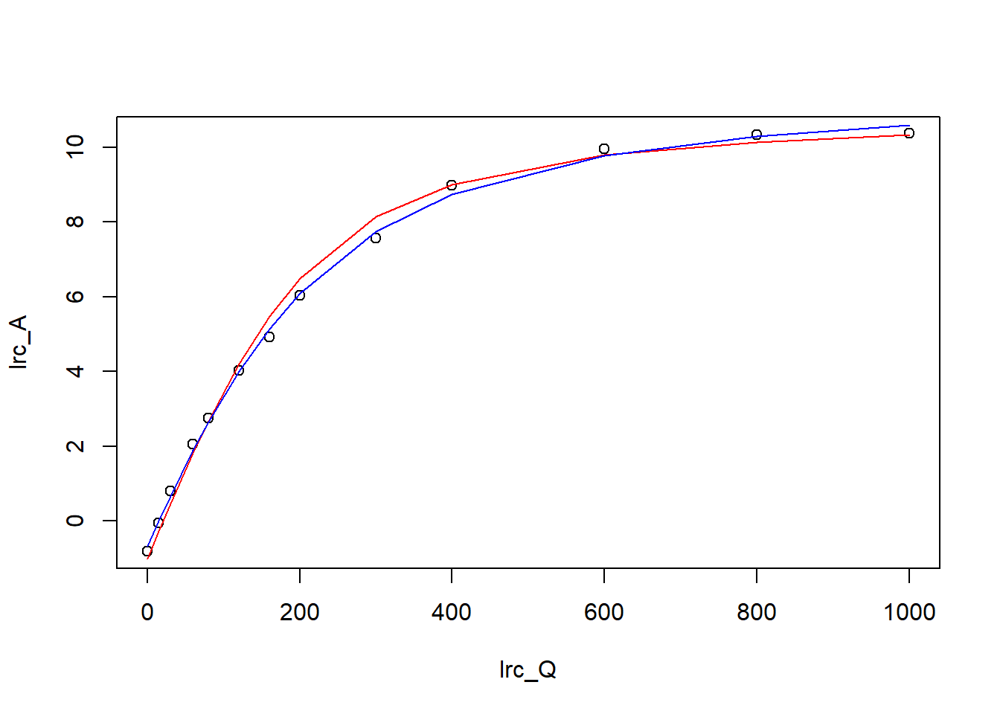

Code
nls_test <- read.csv("data/nlstest.csv")
# 提取数据
lrc_Q <- nls_test$Qin
lrc_A <- nls_test$A非线性拟合是光合数据分析中非常重要的部分，但是他的难点在于其初值的确定。故而这里在正式开始接受光响应曲线模型之前，首先介绍怎样确定非线性拟合的初值。
在解释初始值之前我们首先需要了解一个数学上的概念——迭代，
”迭代法“也称”辗转法“是一种不断用变量的旧值递推新值的过程。
用通俗但不是特别严谨的说法可解释为：每次执行这种算法时，程序都会从原值（也就是我抄的上面迭代法定义的旧值）推导出一个新值。
之所以先介绍这个迭代，原因很简单，非线性拟合就是通过迭代的方法，需要对每一个变量最初的估计值进行不断的迭代，得到一个向一个点收缩或汇聚的值，这个估计值必须在实际值的一定范围内，程序通过不断调整这个值来改善拟合结果。这就解释了上面的问题，初始值是让程序开始运行的前提，不然没法想着目标值迭代推进，必须设定。我下面的内容将以 LI-6800 的光响应曲线的测试数据，使用非直角双曲线模型进行拟合来讲解具体的 R 中的一些实现方法，我们首先导入数据，然后再利用这些数据逐个举例不同的确定初始值的方式。
nls_test <- read.csv("data/nlstest.csv")
# 提取数据
lrc_Q <- nls_test$Qin
lrc_A <- nls_test$AnlsLM 来自于 Elzhov et al. (2016) 的 minpack.lm，利用 C 语言的 MINPACK 库，修改了 Levenberg-Marquardt 算法，在实际操作中，很多时候并不准确的输入初值，它也能得出比较好的拟合结果。结果未必完美，但出现下面让人烦恼的报错：
singular gradient matrix at initial parameter estimates
的概率会大大降低，而且尽管有可能结果不如意，我们也可以利用他的结果缩小初值的范围，继续尝试其他初值。
例如下面的例子中，非直角双曲线 (小节 9) 的 Rd 的初值我们可以利用暗呼吸的实测值大致估计，同理最大光合速率也是如此，剩下的分别为非直角双曲线曲率，我们暂定为 1，alpha 也暂定为 0.1，使用 nlsLM 进行拟合，结果如下： ::: {.cell}
library(minpack.lm)
lrcnls_lm <- nlsLM(lrc_A ~ (1/(2*theta))*
(alpha*lrc_Q+Am-sqrt((alpha*lrc_Q+Am)^2 -
4*alpha*theta*Am*lrc_Q))-
Rd, start=list(Am=(max(lrc_A)-min(lrc_A)),
alpha=0.1,Rd=-min(lrc_A),theta=0.8)) :::
结果没有报错，看上去没有问题，那我们观察一下具体的拟合结果：
summary(lrcnls_lm)
Formula: lrc_A ~ (1/(2 * theta)) * (alpha * lrc_Q + Am - sqrt((alpha *
lrc_Q + Am)^2 - 4 * alpha * theta * Am * lrc_Q)) - Rd
Parameters:
Estimate Std. Error t value Pr(>|t|)
Am 12.307570 0.406739 30.259 2.30e-10 ***
alpha 0.045706 0.003423 13.352 3.09e-07 ***
Rd 0.656638 0.132646 4.950 0.000791 ***
theta 0.707522 0.079738 8.873 9.59e-06 ***
---
Signif. codes: 0 '***' 0.001 '**' 0.01 '*' 0.05 '.' 0.1 ' ' 1
Residual standard error: 0.1852 on 9 degrees of freedom
Number of iterations to convergence: 8
Achieved convergence tolerance: 1.49e-08结果看上去还可以，不过有的时候结果并不理想，该方法并不是万无一失，也就是初值设置也不能太离谱，还是要接近正常值。
模型很多参数可以用已有数据去估计，我们可以只分析难以判断的参数，流程如下：
Rd、Am等我们可以利用测量值来确定一个范围。
剩余的参数，我们也可以根据经验或文献来有一个大致的判断。
然后我们根据数学的方式来判断哪个参数对曲线形状影响最大（例如在分母上的参数，或者是乘以该参数，该参数可以显著改变计算结果，例如整体乘以或除以 0.1 还是 0.01，像 Rd 之类的参数本身就很小，多数公式中都是减去该值，对结果影响很小，我们通常直接使用实测值 ）。
将该参数取一系列值带入模型来求解净光合速率。
将计算的A值与光强进行作图，看我们计算的曲线与测量数据点的重合程度，必要时在修改其他参数，使曲线和散点重合度最好，重合程度最高的参数值即为我们需要的初始值。
# 我们选择的模型，将其写为一个函数，用于计算净光合速率
expfct <- function(x, Am, alpha, Rd, theta) {
(1/(2 * theta)) * (alpha * x + Am - sqrt((alpha * x +
Am)^2 - 4 * alpha * theta * Am * x)) - Rd
}
# 我们的数据
test <- data.frame(x = lrc_Q, y = lrc_A)# 先做实测数据的散点图
plot(y ~ x, data = test)
# 利用上面的函数，假定 alpha 的值为0.8，看计算值与测量值重合程度
curve(expfct(x, Am = (max(lrc_A)-min(lrc_A)),
alpha=0.8, Rd=-min(lrc_A), theta=0.8), add = TRUE
)
观察 图 7.1 的结果可以看到，曲线在 0-600 的范围内，拟合值明显偏大，观察模型的方程式，以及其他起始值的设定方式，我们初步判断 alpha 的值偏大，于是乎我们将其改小观察，但曲线和测量点的重合仍然不是很好，我们尝试修改 theta 值与 alpha 值（也即曲线高于测量点，则需要减小纵坐标的值，低于测量点，则需要增加该值，该过程省略，我大概设置了五分钟完成），最终得出的结果如下：
plot(y ~ x, data = test)
curve(expfct(x, Am = (max(lrc_A)-min(lrc_A)),
alpha=0.06, Rd=-min(lrc_A), theta=0.82), add = TRUE)
图 7.2 尽管看上去效果仍然不满意，但我们可试着进行拟合，看能否得到显著差异的结果：
lrcnls_manual <- nls(lrc_A ~
(1/(2*theta))*
(alpha*lrc_Q+Am-sqrt((alpha*lrc_Q+Am)^2 -
4*alpha*theta*Am*lrc_Q))- Rd,
start=list(Am=(max(lrc_A)-min(lrc_A)),
alpha=0.03,Rd=-min(lrc_A),theta=0.6))
summary(lrcnls_manual)
Formula: lrc_A ~ (1/(2 * theta)) * (alpha * lrc_Q + Am - sqrt((alpha *
lrc_Q + Am)^2 - 4 * alpha * theta * Am * lrc_Q)) - Rd
Parameters:
Estimate Std. Error t value Pr(>|t|)
Am 12.307585 0.406741 30.259 2.30e-10 ***
alpha 0.045706 0.003423 13.352 3.09e-07 ***
Rd 0.656642 0.132646 4.950 0.000791 ***
theta 0.707518 0.079739 8.873 9.59e-06 ***
---
Signif. codes: 0 '***' 0.001 '**' 0.01 '*' 0.05 '.' 0.1 ' ' 1
Residual standard error: 0.1852 on 9 degrees of freedom
Number of iterations to convergence: 7
Achieved convergence tolerance: 4.601e-06# 对拟合之后的结果作图，观察使用我们的估计值，
# 迭代的最终值与元数据的重合程度
plot(y ~ x, data = test, ylim = c(-2, 14))
curve(expfct(x, Am = 12.307586,
alpha=0.045706, Rd= 0.656643, theta=0.707518), add = TRUE)
从 图 7.3 的呈现以及 F 检验的 p 值来讲，图形已经比较完美了。也就是说尽管我们作图的时候看到重合度并不高，但是非线性拟合本来就是一个迭代的过程，只要我们的数据与真实值相差不大，还是能够得到完美结果的。
上面的表述太啰嗦，直接用下面的图形说明一下，其中 alhpa 的取值在此处选择从 0.01 到 0.07，每次增加 0.05，其他值分别为 Am = 12.31, Rd= 0.66, theta=0.71 （此处为展示效果和方便，将这些值直接按照拟合结果设定了，实际差别不大）
library(ggplot2)
library(purrr)
lrc <- read.csv("data/nlstest.csv")
# 光响应曲线比较简单，我们将需要的数据直接提取，方便后面操作
lrc_Q <- lrc$Qin
lrc_A <- lrc$A
n <- length(lrc_A)
alp <- paste0("a=", seq(0.01, 0.07, by = 0.005))
alpn <- rep(alp, each = n)
expfct <-
function(x, Am, alpha, Rd, theta) {
(1 / (2 * theta)) * (alpha * x + Am -
sqrt((alpha * x + Am) ^ 2 - 4 * alpha *
theta * Am * x)) - Rd
}
paras <-
data.frame(
alpha = rep(seq(0.01, 0.07, by = 0.005), each = n),
x = rep(lrc_Q, n),
Am = rep(12.31, n),
Rd = rep(0.66, n),
theta = rep(0.71, n)
)
y = unlist(pmap(paras, expfct))
show <- data.frame(
x = rep(lrc_Q, 14),
y = c(lrc_A, y),
a = factor(c(rep("measured", n), alpn),
level = c("measured", alp))
)
ggplot(data = show, aes(x, y, group = a, color = a)) +
geom_point() +
geom_smooth(se = FALSE) 
从 图 7.4 我们我们可以看到，实测值在 alpha =0.04 和 alpha = 0.05 两条曲线之间，在 0.045 时最接近测量点，也就是我们把初始值设为 0.04 和 0.05 之间最接近，本例中可认为是0.045，实际这三个值均可。
该方法实际为使用 nls2 来实现，具体方法参考 Bouvier and Huet (1994) 的文章，可简单概括为使用一系列的起始值梯度（例如下面的代码中， alpha 的取值在 0.01 到 0.08 之间 ），然后软件循序使用不同的起始值，即排列组合所有的起始值序列，最终找到合适的值，具体实现如下：
library(nls2)
grid.test <- expand.grid(list(
Am=c(12),
alpha = seq(0.01, 0.08, by =0.01),
Rd = seq(0, 3),
theta=seq(0.1, 1, by = 0.1)
))
lrcnls2 <- nls2(lrc_A ~
(1/(2*theta))*
(alpha*lrc_Q+Am-sqrt((alpha*lrc_Q+Am)^2 -
4*alpha*theta*Am*lrc_Q))-
Rd, start = grid.test, algorithm = "brute-force")Error in numericDeriv(form[[3L]], names(ind), env, central = nDcentral) :
Missing value or an infinity produced when evaluating the model
Error in numericDeriv(form[[3L]], names(ind), env, central = nDcentral) :
Missing value or an infinity produced when evaluating the model
Error in numericDeriv(form[[3L]], names(ind), env, central = nDcentral) :
Missing value or an infinity produced when evaluating the model
Error in numericDeriv(form[[3L]], names(ind), env, central = nDcentral) :
Missing value or an infinity produced when evaluating the model
Error in numericDeriv(form[[3L]], names(ind), env, central = nDcentral) :
Missing value or an infinity produced when evaluating the model
Error in numericDeriv(form[[3L]], names(ind), env, central = nDcentral) :
Missing value or an infinity produced when evaluating the model
Error in numericDeriv(form[[3L]], names(ind), env, central = nDcentral) :
Missing value or an infinity produced when evaluating the model
Error in numericDeriv(form[[3L]], names(ind), env, central = nDcentral) :
Missing value or an infinity produced when evaluating the model
Error in numericDeriv(form[[3L]], names(ind), env, central = nDcentral) :
Missing value or an infinity produced when evaluating the model
Error in numericDeriv(form[[3L]], names(ind), env, central = nDcentral) :
Missing value or an infinity produced when evaluating the model
Error in numericDeriv(form[[3L]], names(ind), env, central = nDcentral) :
Missing value or an infinity produced when evaluating the model
Error in numericDeriv(form[[3L]], names(ind), env, central = nDcentral) :
Missing value or an infinity produced when evaluating the model
Error in numericDeriv(form[[3L]], names(ind), env, central = nDcentral) :
Missing value or an infinity produced when evaluating the model
Error in numericDeriv(form[[3L]], names(ind), env, central = nDcentral) :
Missing value or an infinity produced when evaluating the model
Error in numericDeriv(form[[3L]], names(ind), env, central = nDcentral) :
Missing value or an infinity produced when evaluating the model
Error in numericDeriv(form[[3L]], names(ind), env, central = nDcentral) :
Missing value or an infinity produced when evaluating the modelsummary(lrcnls2)
Formula: lrc_A ~ (1/(2 * theta)) * (alpha * lrc_Q + Am - sqrt((alpha *
lrc_Q + Am)^2 - 4 * alpha * theta * Am * lrc_Q)) - Rd
Parameters:
Estimate Std. Error t value Pr(>|t|)
Am 12.000000 0.623023 19.261 1.27e-08 ***
alpha 0.050000 0.006414 7.795 2.72e-05 ***
Rd 1.000000 0.260153 3.844 0.00394 **
theta 0.800000 0.102143 7.832 2.62e-05 ***
---
Signif. codes: 0 '***' 0.001 '**' 0.01 '*' 0.05 '.' 0.1 ' ' 1
Residual standard error: 0.3663 on 9 degrees of freedom
Number of iterations to convergence: 320
Achieved convergence tolerance: NA通过结果可以看到，虽然和之前采用手动方法判定的结果比较接近，但还是略有差异，可以看一下他们各自的结果同测量值的重合程度：
plot(lrc_Q, lrc_A)
lines(lrc_Q, predict(lrcnls2), col="red")
lines(lrc_Q, predict(lrcnls_manual), col="blue")
图 7.5 表明使用 nls2 的拟合结果似乎和测量值更匹配，当然这只是第一印象，后续的判断还要进一步通过 F 检验、 AIC、BIC 等统计方式才能判定 (小节 12)。
采用如上三种方式都可以有效的解决起值的问题，nlsLM 操作上更易实现，对初值的大小不敏感，但设置不能太离谱，否则仍然会报错。作图比对法操作上更麻烦一些，但是这种方式一定能得出合理的初始值设置。采用 nls2 类似于将手动作图方式自动化，类似于 SPSS 中非线性拟合中需要给出一个初始值的范围，且该范围不能过大。如有一定的经验，操作起来将非常迅速。
需要注意的是，这三种方法结合起来使用会更好，例如，即使用 nlsLM 的结果不合理，也可以参考他们参数的范围（部分结果也可能是差异显著），然后将这些结果用于手动作图判定参数或者 nls2 中判定参数范围，或者使用作图法确定大致的范围，将该范围输入到 nls2 中，这样会节省时间，也更加方便。